정보통신산업기사 (2010-09-05 기출문제)
1과목: 디지털전자회로
1. 전원이 인가된 상태에서 연속적으로 펄스를 발생시키고자 할 때, 사용되는 것은?
- 비안정 멀티바이브레이터
- 쌍안정 멀티바이브레이터
- 단안정 멀티바이브레이터
- 클램프 회로
(정답률: 61%)

2. 다음 중 그림 (B)와 같은 회로에 그림 (A)와 같은 파형의 전압을 인가할 경우 출력에 나타나는 전압파형으로 가장 적합한 것은?
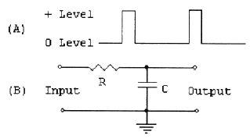
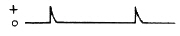
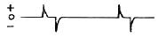
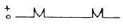
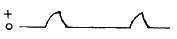
(정답률: 64%)
3. 그림의 논리회로는 어떤 논리작용을 하는가?
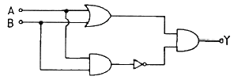
- AND
- OR
- NAND
- EX-OR
(정답률: 63%)
4. 수정 발진회로에서 수정 진동자의 전기적 직렬 공진주파수 fs, 병렬 공진주파수 fp라 할 때, 안정된 발진을 하기 위한 출력 발진주파수 fo는?
- fs ＜ fo ＜ fp
- fs ＞ fo ＞ fp
- fo ＞ fp
- fo ＜ fs
(정답률: 78%)
5. 듀얼 J-K 플립플롭인 74HC76을 이용한 카운터 회로를 제작하여 출입문을 통과하는 인원을 파악하려고 한다. 최대 1000명을 계수하기 위해서는 최소한 몇 개의 IC가 필요한가?
- 4개
- 5개
- 8개
- 10개
(정답률: 40%)
6. 신호주파수가 4[kHz] 최대주파수 편이가 20[kHz]인 경우 FM 변조지수는?
- 0.2
- 0.4
- 5
- 10
(정답률: 78%)
7. 다음 중 PNP와 NPN 트랜지스터를 조합하여 이루어진 Push-Pull 증폭회로는?
- D급 증폭회로
- C급 증폭회로
- B급 증폭회로
- A급 증폭회로
(정답률: 68%)
8. 다음 중 단상에서 브리지 정류회로와 동일한 출력 파형을 얻을 수 있는 것은?
- 클리핑 회로
- 클램핑 회로
- 반파정류 회로
- 전파정류 회로
(정답률: 48%)
9. 콜피츠 발진기에서 컬렉터와 베이스 사이 및 이미터와 베이스 사이의 리액턴스 조건이 순서대로 옳은 것은?
- 유도성, 유도성
- 용량성, 용량성
- 유도성, 용량성
- 용량성, 유도성
(정답률: 64%)
10. 다음 중 전가산기(full adder)의 구성으로 옳은 것은?
- 입력 2개, 출력 4개
- 입력 2개, 출력 3개
- 입력 3개, 출력 2개
- 입력 3개, 출력 3개
(정답률: 68%)
11. 그림의 회로에 입력으로 단위 계단함수를 입력하였더니 응답이 그림과 같았다. 다음 중 상승시간(tr)으로 적합한 것은?
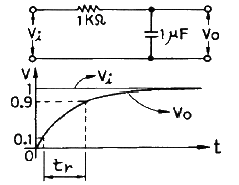
- 0.8[msec]
- 1[msec]
- 2.2[msec]
- 9[msec]
(정답률: 52%)
12. FET에서 VGS=0.7[V]로 일정히 유지하고 VDS를 6[V]에서 10[V]로 변화시켰을 때, ID가 10[mA]에서 12[mA]로 변한 경우 드레인 저항(rd)은?
- 0.2[kΩ]
- 0.5[kΩ]
- 2[kΩ]
- 8[kΩ]
(정답률: 70%)
13. 그림의 검파회로에서 입력 Vi에 피변조파가 가해지는 경우 다음 설명 중 옳은 것은?
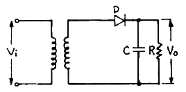
- FM의 동기 검파회로이다.
- 시정수 RC의 값은 매우 작아야 한다.
- 다이오드의 순방향 전압 전류의 특성이 직선적일수록 좋다.
- 위상 변조시 복조회로에 주로 사용된다.
(정답률: 57%)
14. 다음 중 LC 병렬 공진 회로에서 공진주파수[Hz]는?
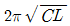
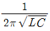
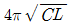
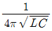
(정답률: 73%)
15. 다음 중 카운터에 관한 설명으로 틀린 것은?
- 토글(T) 프립플롭의 원리를 이용한다.
- MOD-N 카운터는 모듈러스가 N이다.
- 동기식 카운터는 고속에 주로 사용된다.
- 플립플롭이 4개라면 계수는 4가지의 경우가 존재한다.
(정답률: 73%)
16. 단상 전파정류기의 DC 출력 전력은 반파정류기 전력의 몇 배가 되는가?
- 2
- 4
- 8
- 16
(정답률: 48%)
17. 다음 회로에서 S=1, R=0이 인가되었을 때 Q와
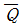
의 출력 상태는?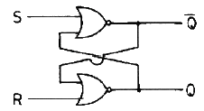
- Q = 0, Q = 1
- Q = 1, Q = 1
- Q = 0, Q = 0
- Q = 1, Q = 0
(정답률: 58%)
18. 듀티 사이클(duty cycle)이 0.1이고, 주기가 30[ms]인 펄스의 폭은?
- 0.3[ms]
- 1[ms]
- 3[ms]
- 10[ms]
(정답률: 85%)
19. 다음 중 부궤환 증폭기의 특징이 아닌 것은?
- 이득이 증가한다.
- 안정도가 향상된다.
- 왜곡이 감소한다.
- 잡음이 감소한다.
(정답률: 70%)
20. 그림과 같은 논리회로와 등가적인 스위치 회로는?
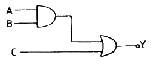
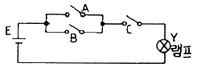
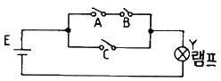
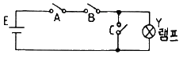
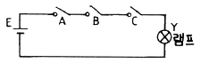
(정답률: 61%)
2과목: 정보통신기기
21. 다음 중 CCTV의 기본적인 구성요소가 아닌 것은?
- 촬상장치
- 전송장치
- 교환장치
- 표시장치
(정답률: 69%)
22. 다음 중 FM 송신기에서 IDC 회로의 주사용 목적은?
- 최대 주파수편이 변동 방지
- 신호의 왜곡 방지
- 선택 특성 조정
- 고조파 변형 방지
(정답률: 66%)
23. 다음 중 공중데이터망에서 ITU-T의 DTE/DCE 간의 인터페이스 표준규격은?
- V.21
- V.26
- X.24
- X.27
(정답률: 74%)
24. 문서의 정형화 및 표준화된 양식과 코드를 이용하여 컴퓨터 처리가 가능한 상호간 통신에 의해 교환되는 시스템은?
- TELETEXT
- MHS
- EDI
- FAX
(정답률: 48%)
25. 다음 중 HDTV에 대한 설명으로 틀린 것은?
- 변조방식은 NTSC 방식이다.
- 화면의 종횡비는 9:16이다.
- 주사선수는 1⑤0개 이상이다.
- 음성품질은 CD급 수준이다.
(정답률: 44%)
26. 다음 중 마이크로파의 중계방식이 아닌 것은?
- 간접 중계방식
- 검파 중계방식
- 헤테로다인 중계방식
- 무급전 중계방식
(정답률: 49%)
27. 다음 중 동영상 압축 기술로 고품질 방송 서비스를 지원하기 위한 것은?
- MPEG-2
- JPEG
- AC-3
- MPEG-1
(정답률: 84%)
28. PC를 LAN에 연결하여 고속의 데이터 송수신이 가능하도록 해주는 장치로 PC 내에 실장 되는 것은?
- NIC(Network Interface Card)
- MODEM(Modulator & Demodulator)
- DSU(Digital Service Unit)
- CSU(Channel Service Unit)
(정답률: 59%)
29. 다음 중 데이터회선종단장치에 해당되지 않는 것은?
- MODEM
- DSU
- CSU
- DTE
(정답률: 43%)
30. 다음 중 T1급 회선의 데이터 전송속도는?
- 64[kbps]
- 1.544[Mbps]
- 6.312[Mbps]
- 44.736[Mbps]
(정답률: 74%)
31. 다음 시스템 중 호텔, 병원, 학교 등 특정 대상의 관찰을 주목적으로 하는 것은?
- CATV
- CCTV
- HDTV
- VRS
(정답률: 83%)
32. 다음 중 모뎀(Modem)의 변복조 방식이 아닌 것은?
- QAM
- DPSK
- FSK
- SSB
(정답률: 79%)
33. 이동통신 채널의 한 특징으로 이동체의 움직임에 따라 수신신호의 주파수가 변하는 것은?
- 페이딩 현상
- 동일채널간섭 효과
- 도플러 효과
- 지연확산 현상
(정답률: 55%)
34. 다음 중 G4 팩스에서 사용하는 압축 부호화 방식은?
- MMR 부호화
- MMH 부호화
- MR 부호화
- MH 부호화
(정답률: 69%)
35. 다음 중 멀티미디어에 대한 설명으로 거리가 먼 것은?
- 정보 매체의 통합성을 갖는다.
- 단일 채널의 단방향성을 유지한다.
- 사용자와 시스템간의 상호작용성을 갖는다.
- 압축에 의한 정보전송이 가능하다.
(정답률: 74%)
36. 다음 중 비동기 전송방식인 ATM에 대한 설명으로 틀린 것은?
- 다양한 종류의 트래픽을 통합할 수 있다.
- 가변길이의 셀을 교환한다.
- STDM에 의한 효율적인 대역폭의 사용이 가능하다.
- 셀은 5바이트의 헤더와 48바이트의 페이로드로 구성된다.
(정답률: 62%)
37. 인공위성을 이용하여 위치, 속도 및 시간 측정을 가능하게 해주는 시스템은?
- GPS
- DMB
- VRS
- ARS
(정답률: 84%)
38. 다음 중 리피터(Repeater)의 설명으로 옳은 것은?
- 멀티 네트워크 케이블을 접속하는 기기이다.
- 에러를 확인하지 않고 신호를 재생하여 전달한다.
- 데이터링크 계층 레벨의 데이터를 전송한다.
- 프레임이나 패킷의 내용을 처리하여 분석하는 기능을 갖는다.
(정답률: 55%)
39. 정보통신 시스템의 통신회선 종단에 위치한 신호변환장치 중 디지털 전송로인 경우 단극성 신호를 쌍극성 신호로 변환이 가능한 것은?
- 모뎀
- 음향결합기
- MUX
- DSU
(정답률: 68%)
40. 다음 중 통신제어장치의 기본 기능이 아닌 것은?
- 문자의 조립 및 분해
- 전송제어
- 회선감시 및 접속제어
- 데이터의 분석
(정답률: 61%)
3과목: 정보전송개론
41. DCE의 일종으로 디지털 신호를 디지털 전송로에 적합한 형태로 변환하는 장치는?
- MODEM
- DSU
- DTE
- FEP
(정답률: 66%)
42. 양자화 오차를 줄이기 위해 원래보다 1비트를 더 추가하여 양자화 한다면 신호대 잡음비는 약 몇 [dB] 개선되는가?
- 3[dB]
- 6[dB]
- 9[dB]
- 12[dB]
(정답률: 53%)
43. 다음 중 위성통신 방식에 해당하지 않는 것은?
- 정지위성 방식
- 랜덤위성 방식
- 위상위성 방식
- 주파수위성 방식
(정답률: 43%)
44. 다음 중 광통신에서 수광 소자에 해당하는 것은?
- 레이저 다이오드(LD)
- 발광 다이오드(LED)
- 고체 레이저
- PIN Photo 다이오드
(정답률: 50%)
45. HDLC에 대한 설명으로 틀린 것은?
- 문자방식 프로토콜이다.
- 반이중, 전이중 통신방식에서 사용 가능하다.
- 데이터링크 형식은 점대점, 멀티포인트에 사용 가능하다.
- 에러검출 방식으로 CRC 방식을 사용한다.
(정답률: 58%)
46. 4[kHz]의 음성신호를 재생시키기 위한 표본화 주파수의 주기는?
- 125[μs]
- 165[μs]
- 200[μs]
- 250[μs]
(정답률: 67%)
47. 다음 중 신호대 잡음비가 15이고, 대역폭이 1200[Hz]라고 하면 통신용량은?
- 1200[bps]
- 2400[bps]
- 4800[bps]
- 9600[bps]
(정답률: 60%)
48. PCM 통신 방식에서 송신순서로 옳은 것은?
- 표본화 → 양자화 → 부호화
- 양자화 → 표본화 → 부호화
- 표본화 → 부호화 → 양자화
- 양자화 → 부호화 → 표본화
(정답률: 83%)
49. 다음 중 무선통신에서 페이딩을 방지하기 위해 사용하는 다이버시티 종류에 속하지 않는 것은?
- 편파 다이버시티
- 적응 다이버시티
- 공간 다이버시티
- 주파수 다이버시티
(정답률: 37%)
50. 광섬유 케이블에서 발생하는 접속 손실의 원인이 아닌 것은?
- 광섬유 심선 접속 부위의 간격
- 괌섬유 심선 단면의 경사
- 광섬유 Core의 직경 및 모양의 상이
- 관로의 재질과 모양
(정답률: 79%)
51. HDLC에서 사용자 데이터를 전송하는데 사용되는 프레임은?
- I-프레임
- S-프레임
- U-프레임
- D-프레임
(정답률: 60%)
52. 파장이 서로 다른 복수의 광 신호를 한 가닥의 광섬유에 다중화시키는 다중화 방식은?
- FDM
- TDM
- WDM
- OFDM
(정답률: 61%)
53. CDMA 이동통신에서 원근(far-near) 문제 해결을 위해 사용되는 기술은?
- 주파수 재사용(frequency reuse)
- 핸드오버(handover)
- 전력 제어(power control)
- 다원 접속(multiple access)
(정답률: 40%)
54. 광섬유 케이블의 특징에 대한 설명으로 틀린 것은?
- 코어의 굵기가 가늘고 경량이다.
- 전자파 유도에 의한 영향을 받지 않는다.
- 광대역 전송이 가능하다.
- 빛을 이용하므로 전송속도가 빠르고 전송손실이 크다.
(정답률: 68%)
55. 8진 PSK에서 반송파간의 위상차는?
- π
- π/2
- π/4
- π/8
(정답률: 79%)
56. 정보신호에 따라 반송파의 진폭과 위상을 동시에 변화시키는 디지털 변조방식은?
- ASK
- FSK
- PSK
- QAM
(정답률: 77%)
57. 표본화 주기를 만족시키지 못함으로 인해 주파수 영역에서 스펙트럼이 겹쳐지게 되는 것은?
- 절단오차
- 엘리어싱
- 반올림오차
- 양자화오차
(정답률: 78%)
58. QPSK 변조방식에서 변조속도가 2400[baud]이면 데이터 전송속도는?
- 1200[bps]
- 2400[bps]
- 4800[bps]
- 9600[bps]
(정답률: 60%)
59. 다음 중 스펙트럼 효율(대역폭 효율)이 가장 좋은 변조방식은?
- BPSK
- QPSK
- 8진 PSK
- 16진 PSK
(정답률: 43%)
60. 단일모드 광섬유에 대한 설명으로 적합하지 않은 것은?
- 모드 간 분산의 영향이 크다.
- 광대역 전송이 가능하다.
- 장거리 대용량 시스템에 주로 사용된다.
- 코어의 직경이 10[μm] 정도로 비교적 접속하기가 어렵다.
(정답률: 31%)
4과목: 전자계산기일반 및 정보설비기준
61. 다음 중 이항 연산이 아닌 것은?
- OR
- AND
- Complement
- 산술 연산
(정답률: 48%)
62. 다음 중 instruction cycle에 해당되지 않는 것은?
- fetch cycle
- direct cycle
- indirect cycle
- execute cycle
(정답률: 30%)
63. 표(table) 및 배열(array) 구조의 데이터를 처리하고자 할 경우 명령어들의 유용한 주소지정 방식은?
- 간접 주소 지정
- 메모리 참조 주소 지정
- 인덱스 주소 지정
- 직접 주소 지정
(정답률: 53%)
64. 일련의 프로그램들이 차지하는 주소공간의 영역을 정의하는 주소의 목록 또는 기호화된 표현은?
- memory dump
- memory map
- memory page
- memory module
(정답률: 71%)
65. 컴퓨터에서 보수(complement)를 사용하는 이유로 가장 타당한 것은?
- 가산의 결과를 정확하게 얻기 위해
- 감산을 가산의 방법으로 처리하기 위해
- 승산의 연산과정을 간단히 하기 위해
- 제산의 불필요한 과정을 생략하기 위해
(정답률: 62%)
66. JK 플립플롭에서 J=0, K=1로 입력될 때 플립플롭은?
- 먼저 내용에 대한 complement로 된다.
- 먼저 내용이 그대로 남는다.
- 0으로 변한다.
- 1로 변한다.
(정답률: 63%)
67. 인터럽트를 발생시키는 장치들을 직렬로 연결시키는 하드웨어적인 우선순위 제어 방식은?
- hand shaking
- daisy chain
- spooling
- polling
(정답률: 59%)
68. 기억장치의 접근속도가 0.5[μs]이고, 데이터 워드가 32비트일 때 대역폭은?
- 8M[bit/sec]
- 16M[bit/sec]
- 32M[bit/sec]
- 64M[bit/sec]
(정답률: 30%)
69. 10진수 -543을 다음과 같이 표현하는 수치 자료의 표현방법은?
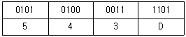
- 고정 소수점 표현
- 부동 소수점 표현
- 팩(packed)형 10진 표현법
- 언팩(unpacked)형 10진 표현법
(정답률: 66%)
70. 프로그램 개발 과정에서 논리적 오류를 발견하고 수정하는 작업은?
- 링킹(linking)
- 코딩(coding)
- 로딩(loading)
- 디버깅(debugging)
(정답률: 72%)
71. 다음 설명의 ( ) 안에 들어갈 내용으로 적합한 것은?
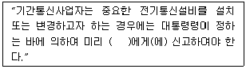
- 국무총리
- 방송통신위원회
- 지식경제부장관
- 해당 지방자치단체장
(정답률: 62%)
72. 정보통신공사업법 시행령에서 정보통신공사의 구분이 아닌 것은?
- 통신설비공사
- 방송설비공사
- 정보설비공사
- 회선설비공사
(정답률: 40%)
73. 발주자는 누구에게 정보통신공사의 설계를 발주하여야 하는가?
- 감리원
- 도급인
- 용역업자
- 정보통신기술자
(정답률: 61%)
74. 기간통신사업자가 전기통신역무에 관한 그 역무별 요금 및 이용조건을 정하여 공시하여야 하는 것은?
- 시행규칙
- 통신규약
- 기술기준
- 이용약관
(정답률: 60%)
75. 다음 중 전기통신사업자의 구분이 아닌 것은?
- 기간통신사업자
- 특수통신사업자
- 별정통신사업자
- 부가통신사업자
(정답률: 54%)
76. 다음 중 방송통신위원회가 기간통신사업자를 허가함에 있어 심사하여야 하는 사항에 속하지 않는 것은?
- 재정 및 기술적 능력
- 전기통신설비의 규모의 적정성
- 기간통신역무 제공계획의 타당성
- 전기통신발전을 위한 재정적 지원
(정답률: 65%)
77. 다음 중 전보통신공사업법의 목적이 아닌 것은?
- 공사업의 건전한 발전을 도모한다.
- 정보통신공사업의 등록 및 공사의 도급 등에 관하여 필요한 사항을 규정한다.
- 정보통신공사의 적정한 시공을 도모한다.
- 정보통신공사에 필요한 기술자를 양성한다.
(정답률: 55%)
78. 사업자의 교환설비로부터 이용자 전기통신설비의 최초 단자에 이르기까지의 사이에 구성되는 회선은?
- 국선
- 내선
- 전송회선
- 통신채널
(정답률: 74%)
79. 선로설비의 회선상호간, 회선과 대지간 및 회선의 심선상호간의 절연저항은?
- 직류 200볼트 절연저항계로 측정하여 2메가옴 이상이어야 한다.
- 직류 300볼트 절연저항계로 측정하여 5메가옴 이상이어야 한다.
- 직류 500볼트 절연저항계로 측정하여 10메가옴 이상이어야 한다.
- 직류 700볼트 절연저항계로 측정하여 12메가옴 이상이어야 한다.
(정답률: 45%)
80. 다음 중 전기통신설비의 용어에 대한 정의로 옳은 것은?
- 전기통신을 하기 위한 기계ㆍ기구ㆍ선로 기타 전기통신에 필요한 설비를 말한다.
- 전기통신을 행하기 위한 통신로 구성설비로서 전송ㆍ선로설비를 말한다.
- 전기통신사업에 제공하기 위한 통신 및 교환기를 말한다.
- 통신설비에 사용하는 장치ㆍ기기ㆍ부품 또는 선조 등을 말한다.
(정답률: 62%)